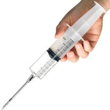

Testosterona: o que é, para que serve e efeitos colaterais
A testosterona é o hormônio sexual masculino. No homem, sua produção é feita majoritariamente pelos testículos, enquanto nas mulheres pequenas quantidades são produzidas pelos ovários e pela glândula suprarrenal. A testosterona desemprenha um papel-chave na saúde e no desenvolvimento do homem por toda a sua vida, desde a fase fetal até a terceira idade. Grande parte das características que fazem um macho da espécie humana ter a aparência de um homem vem da ação da testosterona no organismo, incluindo a maior presença de pelos pelo corpo, voz mais grossa, maior massa muscular, maior estatura, desenvolvimento do pênis e dos testículos, etc. Devido ao seu efeito positivo no anabolismo muscular, a partir da metade do século XX, a testosterona passou a ser utilizada como suplemento para atletas que buscam melhor desempenho esportivo e para pessoas que desejam aumentar a sua massa muscular. Infelizmente, a ação anabólica da testosterona vem sempre acompanhada de um efeito androgênico (masculinizante), que quando presente em excesso pode trazer diversos problemas à saúde, conforme veremos mais adiante.
Testosterona
A testosterona é um hormônio esteroide androgênico anabólico, ou seja, é um lipídio sintetizado a partir do colesterol (esteroide), produzido por glândulas e com ação regulatória na fisiologia celular (hormônio), cujas principais ações são promover a masculinização (efeito androgênico) e a síntese de moléculas complexas a partir de moléculas mais simples (efeito anabólico). As três principais substâncias esteroides produzidas pelo nosso organismo são os androgênios, os estrogênios e os corticosteroides. Os andrógenos, cujo principal representante é a testosterona, são responsáveis pelo desenvolvimento de características masculinas. Os estrogênios são os hormônios responsáveis pelo desenvolvimento das características femininas. Os corticosteroides são responsáveis por uma grande variedade de funções essenciais ao nosso organismo, que envolvem os sistemas imunológico, cardiovascular, metabólico e hemostático. As mulheres produzem uma grande quantidade de estrogênio pelos ovários e uma pequena quantidade de testosterona na glândula suprarrenal e nos ovários. Já os homens produzem uma grande quantidade de testosterona nos testículos e uma pequena quantidade de estrogênio no fígado, no tecido gorduroso e no cérebro. A produção de testosterona pelos testículos é estimulada pelo LH (hormônio luteinizante), que é um hormônio produzido pela hipófise, uma glândula presente no cérebro. Sempre que a hipófise aumenta a liberação de LH, os testículos respondem aumentando a produção de testosterona. Nos homens, a produção de testosterona atinge um pico em três fases distintas da vida. O primeiro pico ocorre ainda durante o período fetal, no segundo trimestre de gestação, e tem como objetivo desenvolver o feto com características físicas masculinas. Posteriormente, ainda no primeiro ano de vida dos meninos, a testosterona volta a subir, mas nenhum efeito físico claro no corpo do bebê é percebido. Imagina-se que esse pico sirva para “masculinizar” o cérebro dos meninos, moldando alguns comportamentos que são característicos do sexo masculino. O terceiro pico, que é o mais óbvio de todos, ocorre durante a puberdade, resultando em várias mudanças visíveis, tais como alteração da voz, aumento dos pelos corporais, maturação genital, produção de espermatozoides pelos testículos, pele mais espessa e oleosa, aumento da libido, crescimento ósseo, aumento da massa muscular e redução da gordura corporal.
Deficiência de testosterona
O nível sanguíneo normal de testosterona nos homens adultos é de 240 a 950 ng/dL (o valor de referência pode variar um pouco dependendo do laboratório). A partir dos 40 anos de idade, a produção natural de testosterona começa a cair a um ritmo de aproximadamente de 1% por ano. Em alguns homens, esse ritmo de queda é maior, fazendo com eles cheguem aos 60-70 anos com uma relevante deficiência de testosterona, que é um quadro análogo ao que ocorre nas mulheres na menopausa, chamado de andropausa ou hipogonadismo masculino tardio. O hipogonadismo é um problema que surge sempre que organismo não consegue produzir quantidades adequadas de testosterona, seja devido a um problema com os testículos ou porque a glândula hipófise não consegue produzir níveis adequados de LH. O hipogonadismo não surge somente nos pacientes idosos, ele pode estar presente desde a vida fetal, como nos casos hipogonadismo de origem genética, ou durante a pré-adolescência, que pode ser provocado por diversas doenças ou uso de fármacos. Quando o hipogonadismo surge no feto é comum haver má formações da genitália. Quando surge em pré-adolescentes, o paciente não entra na puberdade e não desenvolve os caracteres sexuais secundários que costumam surgir neste período. Quando o hipogonadismo surge em homens adultos, os sintomas são menos claros e podem ser confundidos com o processo natural de envelhecimento. Alguns exemplos: Redução da libido. Disfunção erétil. Perda da massa óssea. Redução da massa muscular. Aumento do percentual de gordura corporal. Depressão do humor. Alterações da memória. Queda da performance no trabalho.
Testosterona como esteroide anabolizante
Os indivíduos que utilizam suplementos de testosterona como meio de ganhar massa muscular de forma mais rápida ou para melhorar o seu rendimento esportivo desejam ter os efeitos anabolizantes com o mínimo possível de efeitos androgênicos. Em geral, os principais esteroides anabolizantes não são compostos por testosterona em si, mas sim por precursores ou derivados da testosterona. Alguns dos mais conhecidos esteroides anabolizantes androgênicos são: Nandrolona Decanoato (Deca-Durabolin). Estanozolol (Winstrol ou Winstrol Depot). Androstenediona (Andro). Dehidroepiandrosterona (DHEA). Oxandrolona (Anavar). Oximetolona (Anadrol-50 ou Hemogenin). Dihidrotestosterona (DHT). Metandrostenolona (Dianabol). Fluoximesterona (Halotestin). Enantato de Metenolona (Primobolan). Trembolona (Fina). Doses elevadas de alguns hormônios androgênicos costumam provocar também aumento dos níveis de estrogênio, uma vez que parte da testosterona em excesso é convertida em hormônio feminino. Para evitar a ocorrência de efeitos colaterais associados ao aumento do estrogênio, algumas pessoas associam fármacos anti-estrogênicos, como o tamoxifeno, ao uso dos esteroides anabolizantes.
Efeitos adversos
A suplementação de testosterona ou de seus derivados, seja como tratamento do hipogonadismo ou como droga anabolizante, pode trazer uma série de complicações, principalmente se tomada em altas doses e por tempo prolongado.
 Os principais efeitos colateiras possíveis associados ao uso de hormônios androgênicos são:
Elevação do colesterol.
Hipertensão arterial.
Hipertrofia cardíaca.
Aumento do risco de infarto agudo do miocárdio.
Retenção de líquidos.
Aumento da oleosidade da pele.
Mau odor.
Acne.
Calvície.
Redução na produção de espermatozoides.
Ginecomastia (crescimento de mama nos homens).
Aumento do volume da próstata.
Aumento do risco de câncer da próstata.
Interrupção do crescimento em adolescentes.
Hepatite medicamentosa.
Atrofia testicular.
Ansiedade.
Redução da capacidade cognitiva.
Envelhecimento precoce do cérebro.
Com os esteroides anabolizantes, os níveis sanguíneos de testosterona frequentemente ultrapassam 2.000 a 4.000 ng/dL. Em alguns casos, os valores de testosterona sanguínea podem ultrapassar 20.000 ng/dL, o que é mais de 20 vezes acima do limite superior da normalidade.
Níveis tão elevados de testosterona causam atrofia dos testículos e frequentemente afetam a produção natural de testosterona.
Um ou dois ciclos apenas, especialmente de esteroides potentes como a trembolona, já podem causar hipogonadismo secundário e interferir com o eixo hormonal natural por vários anos e, em alguns casos, permanentemente.
Os principais efeitos colateiras possíveis associados ao uso de hormônios androgênicos são:
Elevação do colesterol.
Hipertensão arterial.
Hipertrofia cardíaca.
Aumento do risco de infarto agudo do miocárdio.
Retenção de líquidos.
Aumento da oleosidade da pele.
Mau odor.
Acne.
Calvície.
Redução na produção de espermatozoides.
Ginecomastia (crescimento de mama nos homens).
Aumento do volume da próstata.
Aumento do risco de câncer da próstata.
Interrupção do crescimento em adolescentes.
Hepatite medicamentosa.
Atrofia testicular.
Ansiedade.
Redução da capacidade cognitiva.
Envelhecimento precoce do cérebro.
Com os esteroides anabolizantes, os níveis sanguíneos de testosterona frequentemente ultrapassam 2.000 a 4.000 ng/dL. Em alguns casos, os valores de testosterona sanguínea podem ultrapassar 20.000 ng/dL, o que é mais de 20 vezes acima do limite superior da normalidade.
Níveis tão elevados de testosterona causam atrofia dos testículos e frequentemente afetam a produção natural de testosterona.
Um ou dois ciclos apenas, especialmente de esteroides potentes como a trembolona, já podem causar hipogonadismo secundário e interferir com o eixo hormonal natural por vários anos e, em alguns casos, permanentemente.